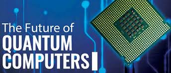

Overview
Quantum computing is a revolutionary technology that leverages the principles of quantum mechanics to perform calculations at unprecedented speeds. By harnessing the unique properties of quantum bits (qubits), quantum computers can solve complex problems that are currently infeasible for classical computers.

What is Quantum Computing?
Unlike classical computers that use bits as the smallest unit of information, quantum computers use qubits. A qubit can represent both 0 and 1 simultaneously due to the phenomenon known as superposition. This enables quantum computers to process vast amounts of data concurrently.
Additionally, qubits can be entangled, meaning the state of one qubit is directly related to the state of another, even if they are separated by large distances. This unique property allows quantum computers to perform complex calculations in parallel.
Applications of Quantum Computing
- Cryptography: Quantum computers could potentially break current encryption methods, leading to the development of quantum-safe cryptography.
- Drug Discovery: They can simulate molecular interactions, speeding up the discovery of new drugs and materials.
- Optimization Problems: Quantum computing can solve complex optimization problems, such as those in logistics and supply chain management.
- Artificial Intelligence: They can enhance machine learning algorithms, enabling faster data analysis and pattern recognition.
- Financial Modeling: Quantum computers can be used for risk analysis and optimizing trading strategies in finance.
The Future of Quantum Computing
As technology advances, quantum computers are expected to become more powerful and accessible. Research and investment in this field are rapidly growing, and it’s anticipated that quantum computing will transform industries such as finance, healthcare, and logistics.
Major tech companies like IBM, Google, and startups are actively working on building practical quantum computers, leading to significant breakthroughs that will shape the future of computing.
